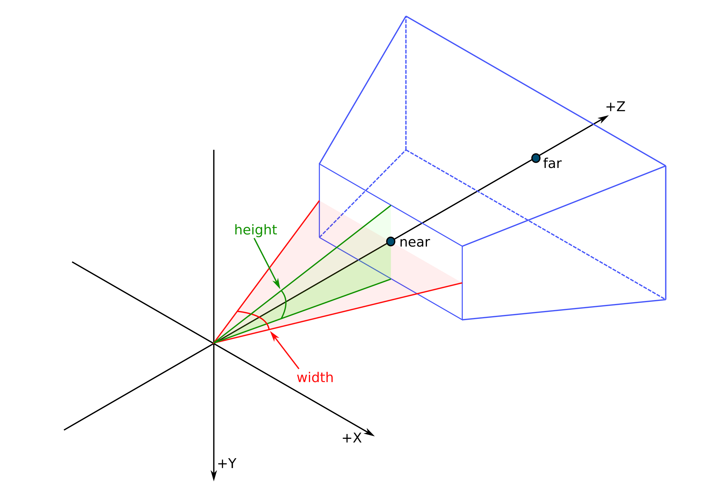

Represent your robot
I, robot
Describe its sensors
For now we have only decsribe the robot main bodyparts but to allows it to preceive we have to set it some sensors. To allow Overworld to reason about what the robot is perceiving, we have to describe the sesnors characteristics. The most important one is the Field of View (Fov) of the sensors. If an object is out of the sensor Fov, Overworld can thus deduce that it is normal if the object is no more perceived.
The FoV characteristics
The Field of View (Fov) can be seen as the definition of the area, relative to a detector, to which a detector is sensitive to the phenomenon it sense. Taking a camera, the FoV is also called the angle of view and it's generally defined by a horizontal angle and a vertical angle.
Considering a virtual camera, as used in video games, we usually consider two additional characteristics being the clip near and the clip far. They respectively represent the minimal distance at which an entity is rendered and the maximal distance. If the camera is placed at the location of an agent's head, the clip near avoids to render elements of the head. For the clip far, it avoids to render too many objects.
In Overworld, we thus need to define these four parameters: the horizontal angle (width) and the vertical angle (height), the clip near, and the clip far.
While the width and the height should match the used sensor, the clip near will be determined depending on your agent CAD model and the clip far will be determined by the used vision-based algorithm.
Describing a sensor
To configure the agent's sensors, we will proceed as we already do, with the use of the ontology.
Open the "agent.owl" file and replace the head description with the following.
The newly introduced individuals represents the agent's sensor with a field of view and a frame id. The sensor's field of view instantiates four relations being our four parameters. Where the clip far and clip near are defined in meters, the width and the height are in degrees.
Several sensors can be created and can be attached to any part of our robot. In our example, Eve only has one sensor that is attached to its head with the property hasSensor.
We are done! Almost too easy...